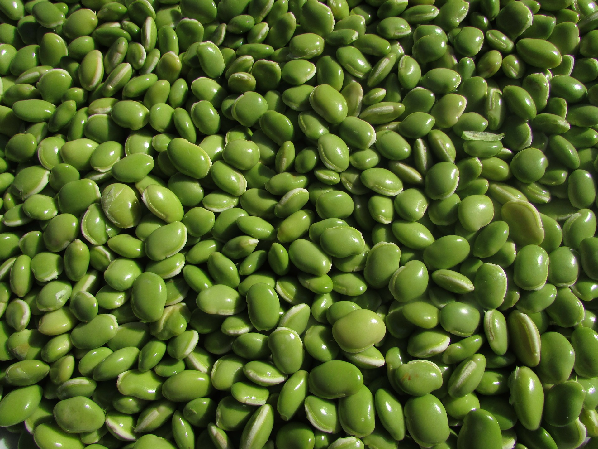
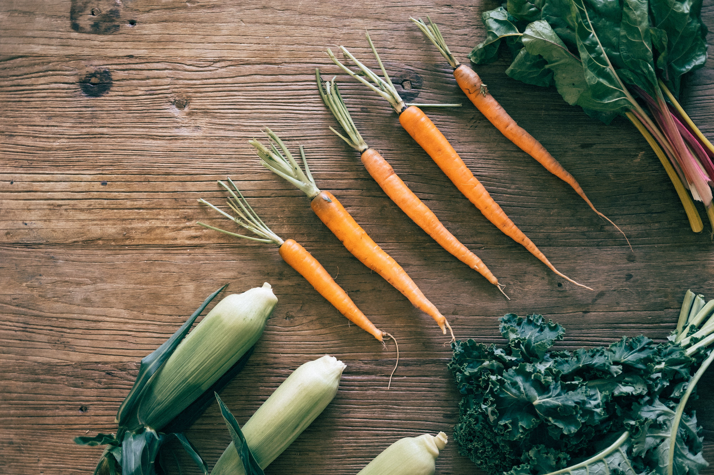

Star Organic Farm is a modern farm with impeccable food standards and nature-right philosophy. Our products are carefully developed and bred to international specifications by experts, ensuring consumers of affordable products with premium quality.
Star Organic Farm has evolved into an Agricultural solutions expert providing services to others in our agricultural community. With a wide range of Organic Products and spices to the consumers all around the global market
Star Organic Farm was established in 1988 with a vision of providing consumers premium quality agricultural products at affordable prices while endearing profits to its stakeholders.
We are a leading agricultural organization employing modern technologies and seasoned crop of professionals on board of its management to drive our overall capacity towards contributing our quota to National food security.
Our vision is to become the benchmark farming company for the providing world-class products to satisfied customers through continuous improvement by the integrity and teamwork of our people. Also to add value to the available resources targeting an end product for local consumption.

With a desire to expand to all the corners of the earth. Our personnels continue to follow organic farming principles as well as ethical and sustainable farming practices.
We want our customers to get quality products and services for determined econonomic competitiveness
A farmer who is motivated by his love of the land and farming knows that increasing his knowledge is a main contributor to success.
For each personnel, farming is a thing of joy, with patience for the success of Star Organic Farm's vison which is paramount and always on agenda

Best company I've ever worked with. very fast, reliable and great customer service. Definitely number one on my recommend list for anyone looking for an agro production company.

Never regretted the decision to work with Star organic Farm, they are the best agriculture company on the market.
Pulses are the edible seeds of plants in the legume family. Pulses grow in pods and come in a variety of shapes, sizes and colors. The United Nations Food and Agriculture Organization (FAO) recognizes 11 types of pulses: dry beans, dry broad beans, dry peas, chickpeas, cow peas, pigeon peas, lentils, Bambara beans, vetches, lupins and pulses nes
VIEW PRODUCT Great fruits and pulps. The pulp of a citrus fruit are the stringy content of the fruit’s endocarp. The pulp contains the juice of the fruit. The pulp is usually removed from fruit juice by filtering it out.
VIEW PRODUCTAgricultural products are all the products obtained from plants, animals and their products as a result of agricultural activities. They are products gotten from plants and animals
VIEW PRODUCT 